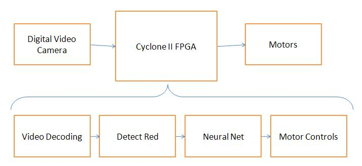

High Level Design
BALL-EOur project involved understanding of both analog circuits and hardware design. We had four main components: four servo motors with a optoisolator and PWM control, hardware motor controller on the FPGA, camera input and image analysis, and a neural network that interfaces with the motor controller to drive BALL-E.
Data is read in from the video camera and interpreted to produce relevant data. This data is then fed into a motor control circuit consisting of a neural network and state machine to control what direction the robot moves.

Top Level Design Schematic